The Facebook Ads Playbook,
explained from zero.
This is how we take a client's offer and turn cold strangers on Facebook and Instagram into booked sales calls. Read it top to bottom — every phase feeds the next. You don't need any ads experience to follow this.
The core principle behind everything
Every business owner says the same thing: "I want more qualified leads." And almost everyone defines "qualified" the wrong way. They think a qualified lead is someone who has money.
That's a weak filter. Thanks to credit, almost everyone has access to money. But having money does not mean someone is willing to spend it. Often the people with the most money are the stingiest with it — they ask for discounts, compare everything, delay, overthink, and want free advice first.
They're the people who already spend money on the problem we solve.
Someone who has paid for gyms, trainers and diet plans is a better fitness lead than a millionaire who never bought anything. Someone who has bought courses, coaching, or agency services before is a better lead for us. Buyers buy. The best predictor of a future buyer is a past buyer.
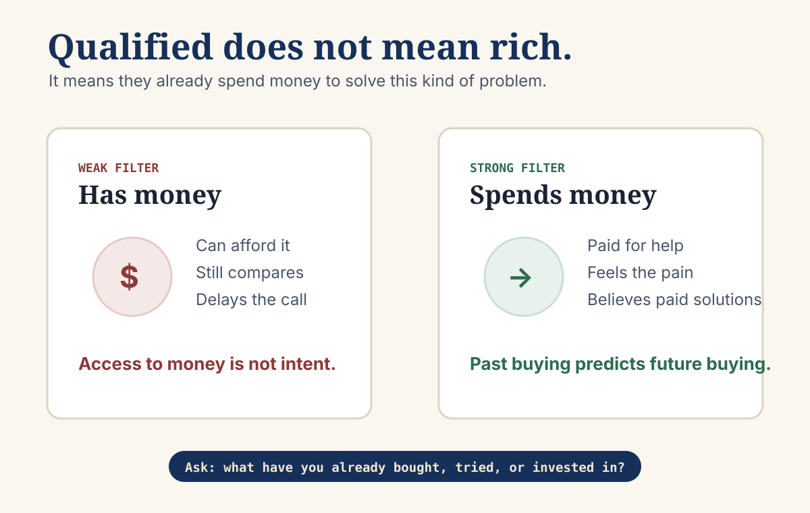
This one idea shapes everything downstream: the questions on our application forms, the angles in our ad copy, even which website visitors we tell Facebook to find more of. Whenever you're qualifying a lead, don't just ask "can this person afford it?" Ask:
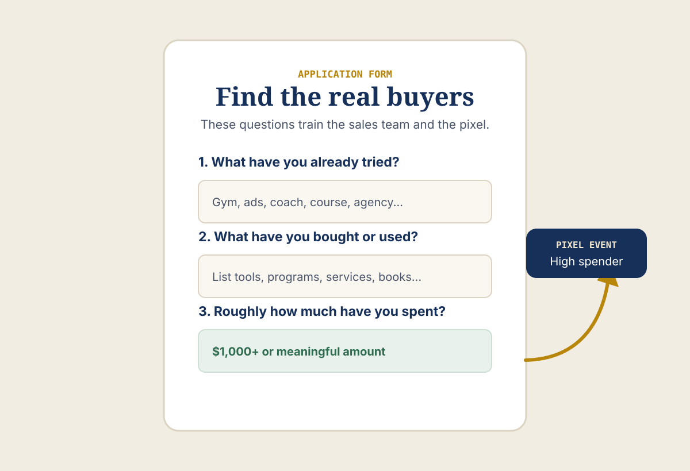
Before Phase 1The vocabulary you'll hear every day
Skim these now, come back whenever you're lost. Nobody expects you to memorize them on day one.
Research — know the market before you spend a rupee
Step 1.1Spy on ads that are already winning
Facebook publishes every active ad in the Meta Ads Library. Here's the logic: if an ad has been running for a long time and racking up impressions, the advertiser is almost certainly making money with it. We study those, not random ads.
- Search the Ads Library with broad keywords for the client's niche (use
keyword_unorderedsearch and active ads only, sorted by total impressions). - Scroll manually. For each keyword, collect up to 10 unique landing page URLs — the actual funnels behind the ads.
- Only keep real coach/consultant funnels: VSL pages, webinars, challenges, applications, consultation bookings.
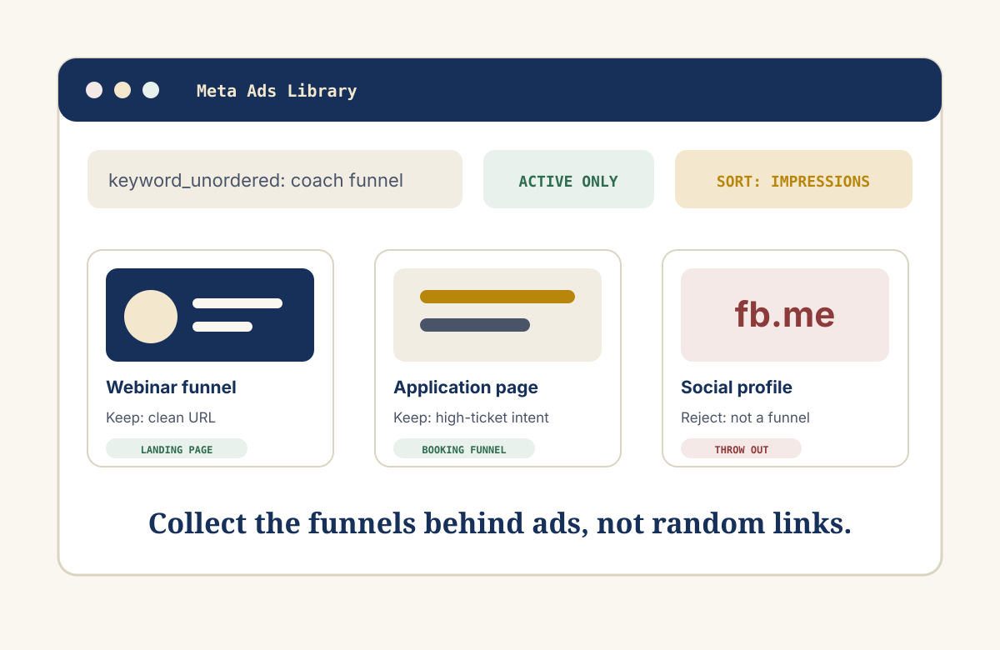
- VSL, webinar & challenge pages
- Application / booking funnels
- One clean root URL per funnel
- Facebook lead forms & fb.me links
- Instagram / WhatsApp / Linktree / social profiles
- App-store links, e-commerce, clinics & medspas
- Duplicate variants of the same funnel
If you only find 6 valid funnels, report 6 and say so. Never pad the list with junk — bad research poisons everything built on top of it.
Step 1.2Build the buyer persona (the deep dive)
Next, we build a full psychological profile of the buyer. We use an AI deep-dive prompt that acts as a world-class direct response copywriter and maps out:
- Deepest pain points — and what they've already tried that failed.
- The dream solution and their beliefs (true or false) about the market.
- The dominant emotion of the market and the exact language that connects.
- The "Without / Even if" formula: "You can get [big benefit] without [the thing they fear most], even if [their biggest limitation]."
The gold is in verbatim quotes. We pull exact wording from Reddit, Quora, G2 reviews and Facebook groups, because people describe their pain better than any copywriter can invent it. We hunt for:
- "Bleeding neck" problems — pain so urgent they need a solution now, not a nice-to-have.
- What keeps them up at 2am, and the pressure from bosses, family, or competitors.
- The cost of inaction — money lost, time wasted, deals going to faster competitors.
- Failed guru advice they've tried, and their skepticism about solutions like ours.
- The identity trigger that makes them stop scrolling and think "that's for me."
- The transformation: before state → after state, with a concrete measurable outcome.
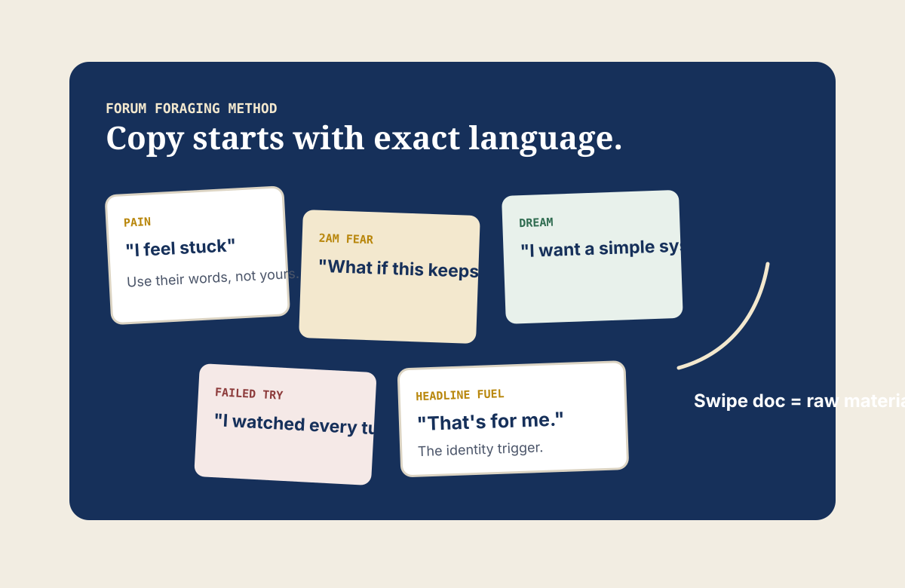
We also validate the market itself: who's running paid ads in this space, typical price points, and saturation on a 1–10 scale. The sweet spot is 5–6 — proven demand, but still room to differentiate. Finally the avatar gets a name and bio ("Noah from New York, Head of Sales, $160K/year"), with their deepest fear and dream outcome each summarized in one sentence.
Step 1.3If the client has data: mine the form responses
When a client has a CSV of survey or application answers, that's better than any guesswork. Upload it and run this prompt chain — and run the whole thing 2–3 times, because each pass surfaces different insights:
2. I am starting [PROGRAM], can you summarize this sheet for me
3. Create an ideal client profile based on the responses here
4. What psychographic insights did you get from the data
5. What negative things have you noticed in the response sheet
6. Based on the data, give me a curriculum
7. Analyze the feedback and give me repeating words or phrases,
to be used in landing pages. Give the EXACT words.
Step 1.4If there's no data: build the persona from scratch
No CSV? We use a structured persona prompt covering demographics, background, psychographics, professional and personal goals, media habits, purchasing behavior, technology usage, and pain points — woven into one coherent narrative person.
Then we run the Before/After exercise: acting as a market researcher who has talked to hundreds of people in the niche, answer these two questions 10 times each, going deeper each time:
- Summarize their current state (the painful present).
- Summarize their desired state (the dream outcome).
The gap between those two lists is the ad campaign.
Step 1.5Interest targeting: proxies for buyers
Remember Phase 00 — we want spenders. Since we can't target "people who spend money" directly, we target signals that correlate with it:
- Life moments: birthdays (new beginnings), engaged credit-card users.
- Devices: premium phone owners.
- Locations: people near convention centers and five-star hotels (2 km radius).
- Affluent hobbies: yoga, tennis, health clubs, spas, horse riding.
- Collect 10 clean competitor funnel URLs per keyword from the Meta Ads Library.
- Run the persona deep-dive with forum foraging; save verbatim quotes in a swipe doc.
- If a CSV exists, run the 7-prompt chain 2–3× and extract exact repeated phrases.
- Deliver: one avatar document + one "exact language" bank. Everything else builds on these.
Ad copy — words that make strangers care
The metric that exposes bad copyCTR vs CTR (All)
They arrive on the sales page with no context and no orientation — basically lost — and bounce. Good ad copy does half the selling before the click. A healthy ad has plenty of engagement (reads, expands, reactions) around its link clicks, which shows people consumed the message first.
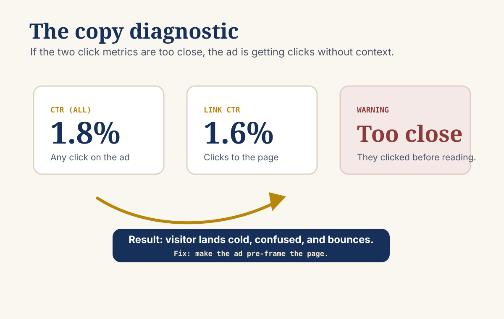
FrameworkThe "What Happens Next" ad
This is our go-to long-copy framework. The psychology: people are more motivated to avoid loss than to gain something new — but you still need to move them from problem to solution. So you become a fortune teller and show them two futures:
- Call out symptoms they're already feeling right now.
- Predict the dark future — "what happens next" if they don't fix it. Go deeper into the problem state.
- Flip the script — "what happens next" once they DO take action, using the client's mechanism.
- Stack the timeline of wins — within days… within weeks… within months…
- Prove it — "these are the exact results over [X] people achieved with [the method]."
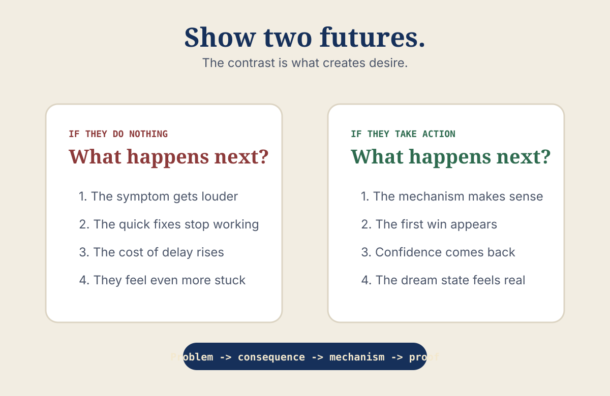
When writing it, don't lean on logic or feature lists. Tap into strong emotional desires: feeling safer, smarter, superior, or seen. And always write it USING the buyer persona from Phase 1 — never from imagination.
UnlearningNine copywriting "rules" that are actually half-truths
You'll hear these rules everywhere. Each has a kernel of truth and a bigger truth behind it:
| The "rule" | The actual truth |
|---|---|
| "Keep sentences short." | Rhythm converts, not length. Mix short punches with longer flowing lines — monotony is the enemy. |
| "Never repeat yourself." | Repetition with variation is hypnotic. Each restatement of the promise answers a different doubt. |
| "Clear, never clever." | Clever anchored in clarity sticks. "Stop coaching like a side hustle. Start running it like a real business." Vagueness is the enemy, not wit. |
| "One CTA only." | Multiple CTAs work when they meet different readiness levels: "Join now" for the ready, "Grab the free guide" for the curious. |
| "Never say 'I'." | Strategic vulnerability sells. Your story isn't the hero — it's the mirror. "I felt this" makes them think "me too." |
| "No emotion in B2B." | Business buyers are still humans afraid of making the wrong call. Naming what they really feel is honest, not unprofessional. |
| "People don't read long copy." | People don't read boring copy. A 2,000-word piece that feels written just for them gets read to the end. |
| "Follow the formula (PAS, AIDA)." | Formulas are training wheels. Once you know why they work, you can lead with the dream instead of the pain and still convert. |
| "Qualified = has money." | You know this one already. Qualified = spends money. Weave the spending-behavior angle into the copy itself. |
Headline machineFormulas + the refinement chain
Headlines are fill-in-the-blank structures fed with your persona DATA. A few of the workhorses:
- The Lazy [Avatar]'s Way to [Primary Goal]
- How to [Achieve Desired Outcome] in [Specific Time Frame]
- [Number] Mistakes Most People Make When [Common Action]
- You Don't Have to Be [Something Challenging] to Be [Desired Result]
- Why You're [Not Achieving Outcome] — and How to Fix It
- Get Rid of [Problem] Once and For All
Then we run a refinement chain — each prompt improves the last output:
simple but dimensional language. Create 20 headlines using
FORMULA structures + DATA. Some as questions. No colons,
no exclamation points.
2. Rewrite each with dimensional, vivid examples in context.
3. Work the dimensional copy INTO the headline. Make each one
mysterious enough that I have to keep reading.
4. Remove colons, commas, dashes. One complete thought.
5. You're writing too lofty. Keep it simple.
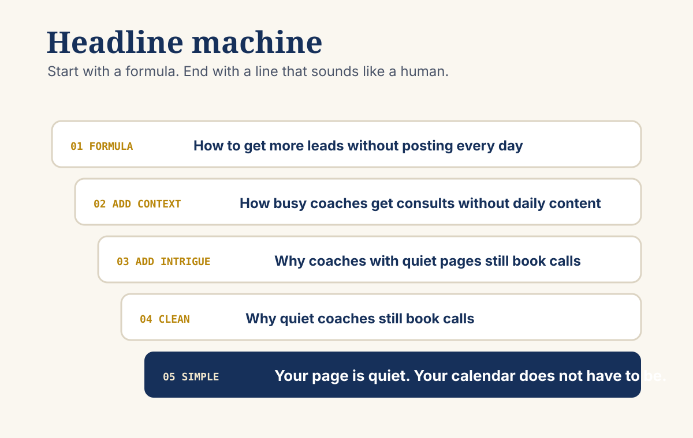
One more guardrail: we ban the classic AI-sounding words — empower, unleash, unlock, elevate, delve, tapestry, transform, journey, groundbreaking, discover — and ask instead: "Make me see it."
Sales bulletsFascination bullets that create intrigue
Bullets tease, they never reveal. The pattern: imply a specific, valuable benefit while withholding the answer — "The #1 thing you must never do…", "What [experts] know about [topic] that you don't…", "How to X without Y…"
Run the bullet prompt 2–3 times against the client DATA, mixing the formula order (never top-to-bottom). Then refine: swap numbers for •, make them more aggressive or softer as the brand needs, remove the company name to add mystery, and always end the stack with "• And much, much more!"
Final passHumanize + compliance
- Draft one "What Happens Next" long ad from the persona doc.
- Generate 20 headlines through the 5-step refinement chain; shortlist 5.
- Write 10 fascination bullets (2–3 passes), end with "And much, much more!"
- Run the humanize + compliance checklist before anything ships.
Creative — the images and videos people actually see
Image adsGenerating ad images with AI
We generate square ad images from detailed JSON prompts (usually 6 at a time, each in its own text block so they're easy to copy). Two rules govern every image concept:
- Bake in the qualification angle. Images should speak to people who already spend on the problem — "buyers buy" applies to visuals too.
- Feed the generator specifics. Use the fill-in-the-blank chain: What kind of images would promote [product]? → List the adjectives of that scene → Describe the scene in detail → paste all of it into the image generator.
For fresh angles, we also ask open-ended questions: how to visually represent the product's benefits, how to use color psychology for this audience, what visual metaphor makes the ad memorable, and how to work user-generated content or social proof into the visual.
Visual formatsMake it look native, not like an ad
One useful note from the Sanjit process doc: the first job of an ad image is to blend into the kind of content people already stop for. Build a swipe file around formats like Breaking News, Raw Native, SMS Screenshot, and visual pattern interrupt. Then test one visual style with several headline variations before moving on.
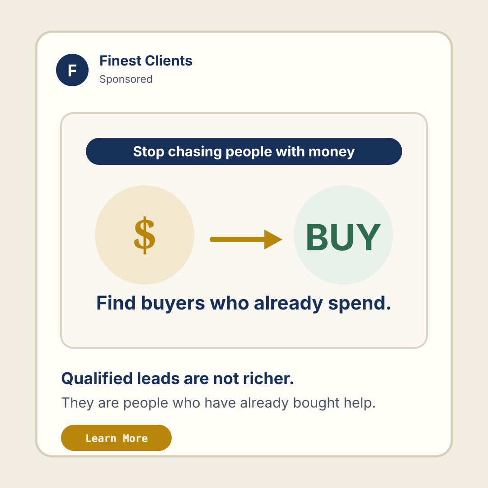
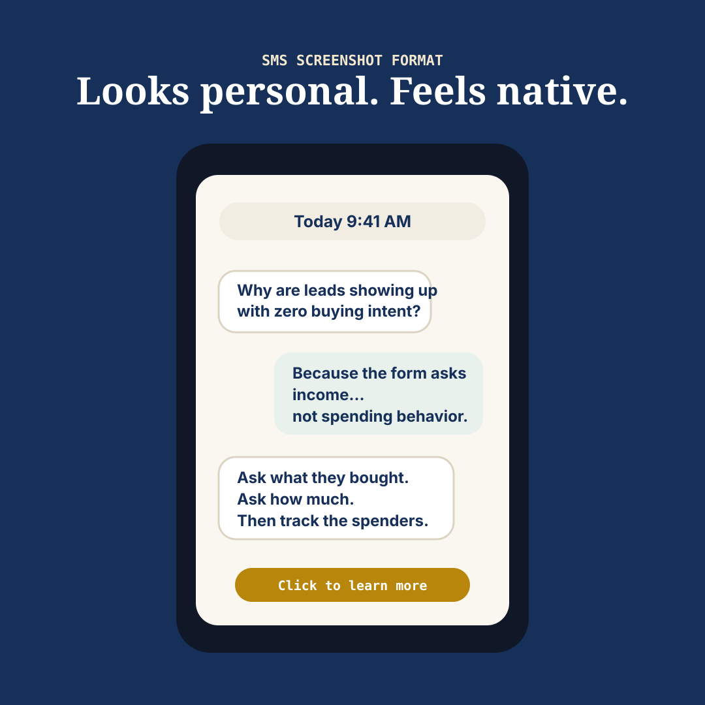
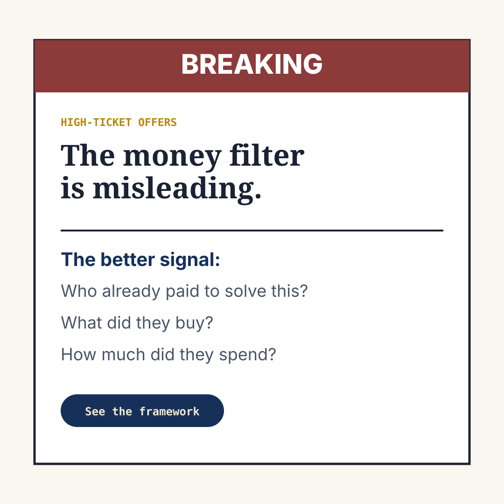
Video editing rulesThe Ad Video Codex
Every ad video gets edited with subtitle-based motion graphics: read the video's transcript, understand what's being said at each moment, and add a relevant visual graphic for that exact moment. Non-negotiables:
- Graphics relevant to the spoken line — never random decoration
- Keep graphics compact, clean, colorful, animated
- Place graphics above the speaker's head area
- Vary images, icons and colors across moments
- Export vertical and a 1000×1000 square version
- Cover the face, mouth, eyes, or subtitles
- Put text inside the motion graphics
- Reuse the same image across videos or timelines
- Leave internal labels in the export ("VSL 01", "1 min")
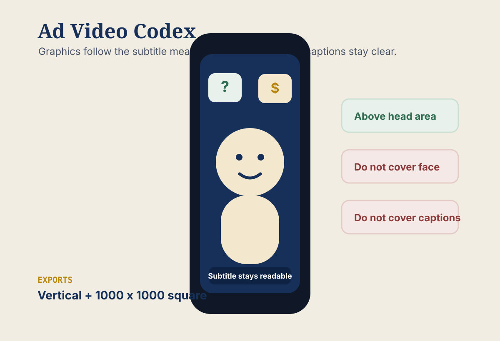
StructureThe B2C video ad skeleton
StructureThe B2B VSL skeleton (timed)
| Beat | What happens |
|---|---|
| Pattern interrupt 0–5s | Optional. A confusing prop, a shocking statement, walking toward the camera — anything unexpected. Must be paid off later in the copy. |
| Quick hook 0–5s | Call out WHO they are, their circumstance, their problem, or their desire: "If your sales team is underperforming…" |
| Big claim + USP 5–20s | State the ONE big benefit (2–3 max), then briefly explain why your way beats competitors, DIY, and indirect options. |
| Big guarantee | "You achieve [result] OR [we keep working free / we pay you / we buy your business]." Get creative — a guarantee that doesn't scare the owner a little isn't strong enough. |
| Proof 20–45s | Track record or 5 rapid-fire case studies with quick before/afters in a timeframe. |
| Soft CTA | Low commitment: "See the demo." |
| Mechanism | The heart of the VSL — see below. |
| Hard CTA → more proof → final CTA | Direct ask, extra case studies, close. Optionally handle FAQs/objections rapid-fire at the end. |
A mechanism is the simultaneous explanation of why everything they tried before failed AND why this will be different. The script shape:
Most people trying to get [result] do [X] → here's the problem with that → which ultimately means [consequence] → so instead, we do [our method] → which allows us to [benefit] → which ultimately means [benefit of the benefit].
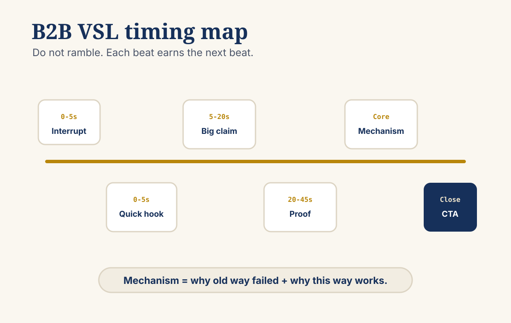
The more sophisticated and competitive the market, the more you should focus on ONE key mechanism instead of a list of reasons.
ShortcutReverse-engineering YouTube video ads
- Right-click a YouTube ad → Copy debug info.
- Paste it into an AI chat and ask for the two YouTube links inside — the ad URL and the actual video URL.
- Ask: "Analyze this video ad's transcription for hook, story and CTA — and why is this ad working?"
- Estimate spend: take the view count and date, look up current YouTube CPM rates for the region, and calculate roughly what they've spent.
- Finish with: "For you to adapt this ad for my business, what information do you need?" — and let the AI interview you.
- Generate 6 JSON image prompts per angle; keep every prompt in its own text block.
- Edit videos to the Codex rules; QA against the Never list before export.
- Draft one B2C skeleton and one B2B VSL skeleton per client using the tables above.
- Reverse-engineer 2 competitor YouTube ads and log their hook/story/CTA in the swipe doc.
Landing pages — where clicks become leads
The mindset shiftAwareness is a journey, not a badge
Beginners think a reader arrives wearing a badge — "problem-aware", "solution-aware", "ready to buy" — and that you need a different page for each. Wrong frame. A sales page isn't written FOR an awareness level. It's written in an ORDER that creates awareness. One page, right sequence, works for everyone:
- Start with the problem — even for people who already know it. The problem is neutral ground: the beginner feels seen, the researcher feels validated, the comparison-shopper feels reassured they're in the right place. Everyone keeps reading.
- Show WHY the problem exists. Most pages skip this. After recognizing the problem, the reader's next thought isn't "what should I buy?" — it's "why does this keep happening to me?" Answer that first.
- Show why the obvious solutions don't work. If you don't address "can't I just Google it / watch YouTube?", they'll leave and try that first. Knowing concepts and having a system are different things.
- Only now, present the product. All three reader types have arrived at the same realization: "I need a real solution, not more information."
Most sales pages don't fail because of bad copy. They fail because steps are skipped — the writer gets bored with the problem before the reader does.
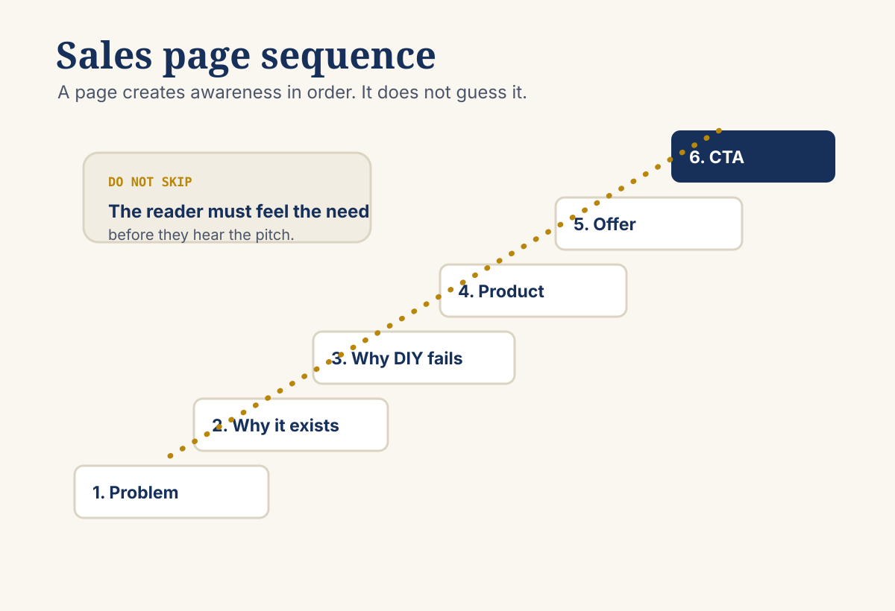
Page type AThe opt-in page — 5 essential elements
One job: get contact details in exchange for a high-value content offer. Even though it's free, the prospect pays with their data — so you're still selling the opt-in.
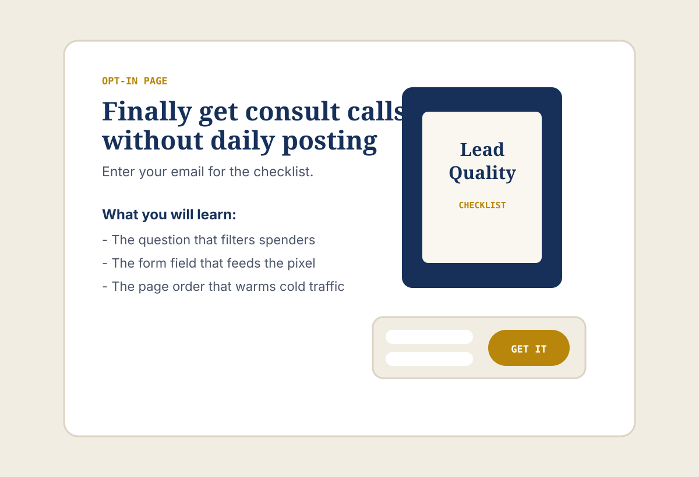
Page type BThe sales page — the 17-step selling system
For long-form sales pages, VSL pages and webinars (from Sell Like Crazy). The order matters — it's a persuasion staircase:
Copy is useless if the offer is weak. The offer must be so good "only a lunatic would refuse." Every Godfather Offer includes:
- Rationale — why are you being this generous? (Unexplained generosity feels like a trap.)
- Value build — establish the "regular" price so the deal is visible.
- Payment options — plans lower the barrier to entry.
- Premiums — free gifts/bonuses included.
- Power guarantee — beyond "satisfaction guaranteed." Be specific: "results in 90 days or we work for free."
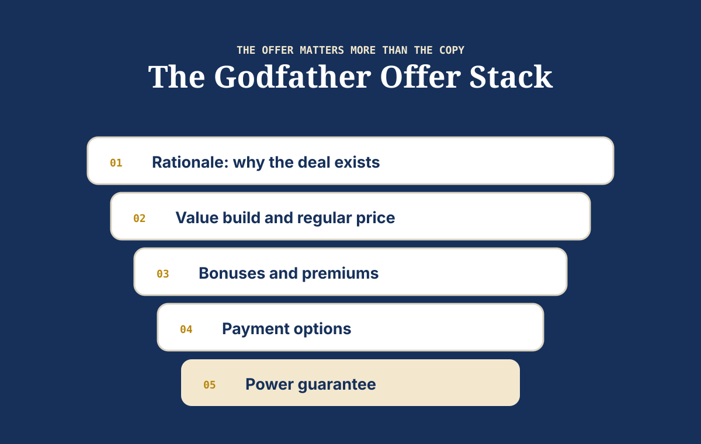
High-ticket servicesSell the call, not the product
For consulting and high-ticket services (that's us and most of our clients), don't sell from the page — sell a strategy call. After they accept, make them fill an application/survey. The psychology: jumping through hoops flips the power dynamic — they're chasing you. And the application questions? Phase 00: what have you tried, what have you bought, how much have you spent.
Universal rulesPrinciples for every page
"If you can't pay money to acquire a new customer, you do not have a business."Sabri Suby — Sell Like Crazy
- Audit any page against the 5 opt-in elements or the 17-step staircase — flag skipped steps.
- Check the reader sequence: problem → why it exists → why DIY fails → product.
- Verify the offer passes the Godfather checklist before the page goes live.
- Confirm application forms ask the three spending questions from Phase 00.
Launch & scale — multiply what's working
Scaling a winnerChange the hook, keep the body
Once testing crowns a winning script, we scale it without breaking it. The golden rule: the body stays within ±10% of the winner's word count and structure — only the hook changes. The full scaling package:
Follow-upEmail sequences by "extrapolation"
Most leads don't buy on day one, so email does the patient selling. Our rule is strict: every subject line and email angle must be pulled from something that already exists on the landing page. No random newsletters, no off-topic stories, no "just checking in."
- Extract from the page: headline + subhead, big promise/mechanism, benefit bullets, proof, demo, steps, mistakes to avoid, FAQ objections, guarantees, bonuses.
- Turn each extracted item into ONE email theme. Each email feels like a continuation of the page.
- Write two sequences: a 10-email non-buyer follow-up (opted in, didn't buy → drive back to the front-end page, a different page-derived theme every email), and a 3–7 email upsell sequence (bought front-end, didn't buy the upsell → themes only from the upsell page).
Format for every email: subject derived from page wording, optional preheader, 120–250 word body in simple language and short paragraphs, exactly one clear CTA matching the goal.
Lead qualityMeasure it, don't vibe it
"Lead quality" is too vague to improve. We pick 3–5 specific, measurable parameters from the client's paid-student survey (occupation, income, education, past course purchases, and so on) and track those. Separately, we survey paying customers for buying-intent signals — premium gadget ownership, homeownership, vehicle type, club memberships, travel frequency, luxury hobbies — and use those patterns to sharpen targeting.
And when we find a winning audience? Stop fiddling with the audience. Start focusing on messaging.
- Build the 12-variant + 9-image-text + 50-hook scaling package for each winner.
- Run the Part D compliance pass and attach the QC checklist.
- Draft the 10-email non-buyer sequence, every theme traceable to the page.
- Report lead quality against the 3–5 agreed parameters — numbers, not adjectives.
The refresh rhythm — because every ad dies
Here's the pattern that kills accounts: a campaign crushes for two weeks. Then week three hits — CPAs double, volume drops, and you're scrambling to make new creative under pressure. We've seen a large spender ride the same creatives for months, and when they finally fatigued it took six full weeks of poor performance to find viable replacements. The lesson:
Whether the account runs complex manual bidding or simple broad targeting — both can work. The common thread in every account that scales is consistent creative refresh. That part is not optional.
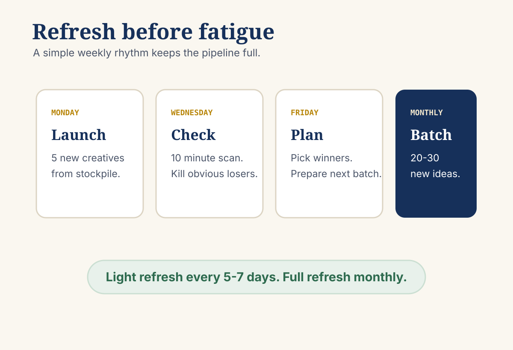
Two-method systemLight refresh vs full refresh
| Light refresh | Full refresh | |
|---|---|---|
| When | Every 5–7 days | Monthly |
| For | Ads still working but showing early fatigue | When you need genuinely new creative |
| What changes | Same core message and angle. Swap the image/video slightly, change colors and layout, rotate testimonials, minor headline tweaks. (Winning red background? Ship blue, green, black versions.) | 20–30 brand-new images from scratch, entirely new angles and hooks, new video creative, new formats, new testimonial creative. |
| Effort | Minutes per ad using templates | Batch it: one 2-hour block builds a month's stockpile |
ExperimentThe creative-variety test (Andromeda)
The old way: separate everything — images in one ad set, videos in another, square here, vertical there. The new approach we're testing: throw variety into the SAME ad set — reels, square videos, square images, vertical images, 4–5 different pictures — and let Facebook figure it out. The algorithm optimizes for creative variety; giving it options in one place lets it test formats against people faster.
Honest caveat: still under testing, not confirmed on every account. Where we've tried it, it's working — but treat it as an experiment, not a rule.
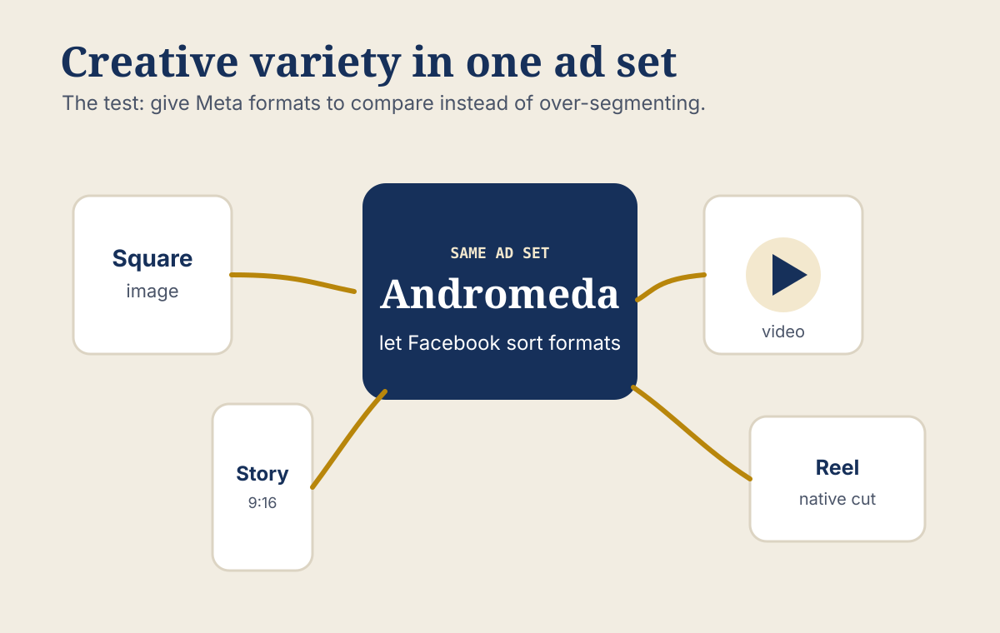
RoutineThe weekly creative calendar
| Day | Job |
|---|---|
| Monday | Launch 5 new creatives from the stockpile into the testing campaign. |
| Wednesday | Quick 10-minute check. Are Monday's launches working? Kill obvious losers. |
| Friday | Review & plan: which Monday creatives won? What's needed for next Monday? What needs a full refresh soon? |
| Monthly | Batch creation day: one 2-hour block, 20–30 new images or videos. Restock the pipeline. |
Two supporting habits: keep 5–10 base templates ready so refreshes never start from zero, and maintain a swipe file — screenshot every ad (ours or competitors') that catches your attention.
HousekeepingComment moderation
Active ads attract trolls, and negative comments tank ad performance. Every client page gets our keyword moderation list loaded into Facebook's page settings so troll comments are auto-hidden before they poison the social proof.
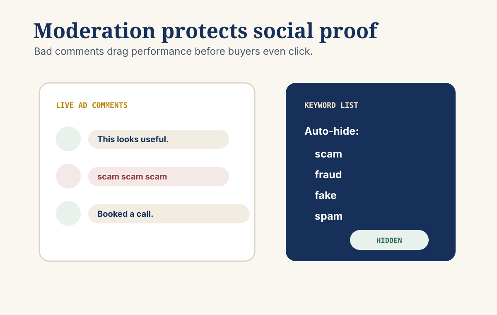
- Own the Mon / Wed / Fri rhythm on assigned accounts — it keeps us ahead of fatigue instead of reacting to it.
- Prepare light-refresh variants (color/layout/testimonial swaps) every 5–7 days.
- Join the monthly 2-hour batch day; leave with 20–30 fresh creatives stockpiled.
- Confirm the keyword moderation list is installed on every new client page.
Your first week
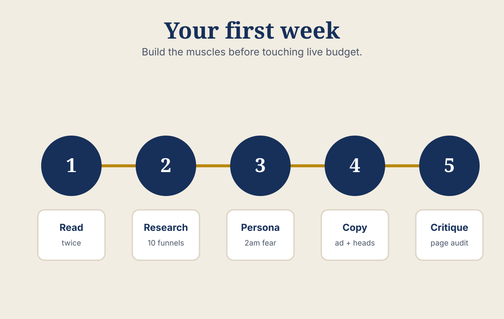
Your ads will die. That's not a question of if — it's a question of when. The difference between advertisers who scale and advertisers who struggle: the ones who scale refresh creative before the ads die.